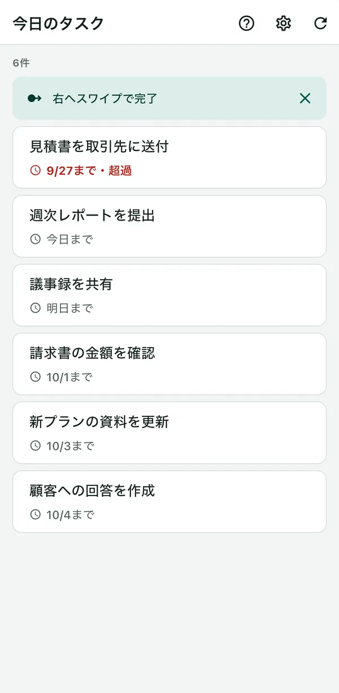
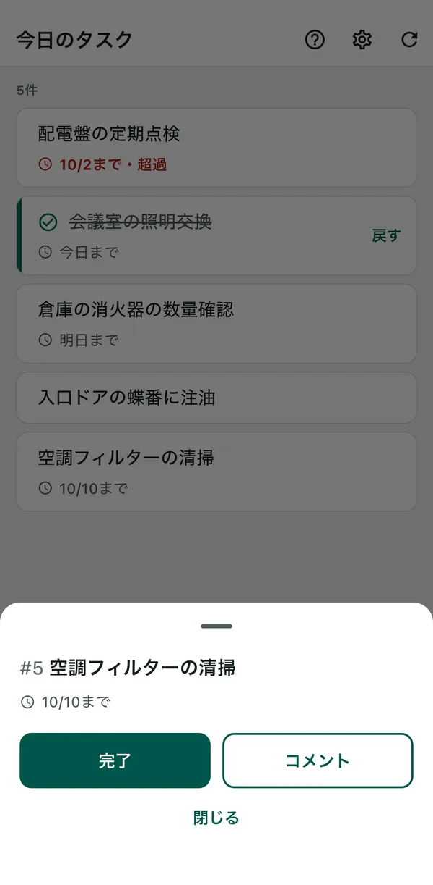

BeatMine for Redmine
サポート
自分が担当するRedmineのタスクを、iPhoneから短い操作で報告するアプリです。本アプリはRedmineの公式アプリではなく、Redmineの開発者とは関係ありません。
- 自分が担当する、まだ終わっていないタスクだけが並ぶ。期限を過ぎたものは赤で出る。
- 行を右へスワイプすると完了。すぐ取り消せる。
- 行をタップすると、コメントも送れる。内容はRedmineの履歴に残る。


使い始めるために必要なもの
- Redmine 6.0・6.1・7.0のどれか。
- そのRedmineを、この端末からHTTPSで開けること。
- RedmineでREST APIが有効になっていること（Redmineの管理者の設定）。
- 自分のAPIキー。手元になければ、接続の画面の「APIキーをRedmineで取得」から取れる。
使えない環境は「対応していないもの」にまとめています。
使い始める
- アプリを開き、RedmineのURLを入れる。
- 「APIキーをRedmineで取得」を押す。ブラウザでRedmineが開くので、ログインして、表示されたAPIキーをコピーする。BeatMineに戻り、「貼り付けて接続」を押す。APIキーが手元にあれば、入力欄に入れて「接続」を押してもよい。
- 自分のタスクの一覧が出る。
つまずいたとき
画面に出た文を探してください。
接続するとき
「Redmineに接続できません。」と出たら、原因を確かめます。URLとAPIキーの誤りは、その入力欄の下に出ます。それ以外は、「詳細」を押すと出ます。
| 原因の文 | できること |
|---|---|
| 「RedmineのURLが正しくありません。」 | 端末のブラウザで、そのURLを開いてみる。開けないときは、URLの打ち間違いや、社内だけのRedmineに社外からつないでいることが考えられる。 |
| 「APIキーが正しくありません。」 | APIキーを入れ直す。「APIキーをRedmineで取得」から、表示されたAPIキーをコピーして貼り付ける。Redmineの前に別のログイン（Basic認証など）がある環境では、このアプリは使えない。 |
| 「RedmineのAPIが無効です。」 | RedmineでREST APIを有効にしてもらう。 |
| 「Redmineの証明書を確認できません。」 | そのRedmineの証明書を、この端末で確かめられない。自社だけで使う証明書のRedmineには対応していない。Wi-Fiのログインが終わっていないときや、端末の日時がずれているときにも出る。 |
読み込み・完了・コメントのとき
| 画面に出る文 | できること |
|---|---|
| 「ネットワークエラー」 | 電波の届く場所で、もう一度試す。Redmine側が一時的に応答しないときにも出る。 |
| 「他のユーザーによって更新されています。再読み込みしてください。」 | ほかの人がそのタスクを変えた。再読み込みして、今の状態を見てから操作する。 |
| 「完了する権限がありません。」（コメント・読み込みも同じ形） | そのRedmineで許可されていない。Redmineの管理者に相談する。 |
| 「未完了の子タスクがあるため、完了できません。」 | 子タスクを先にすべて完了する。 |
| 「未完了のタスクにブロックされているため、完了できません。」 | ブロック元のタスク（Redmineの「関連するチケット」）を先に完了する。 |
| 「変更できませんでした。」 | Redmineが変更を受け付けなかった。完了するときに入力が必要な項目があると起きる。その場合は、Redmineの画面から完了する。 |
| 「送信完了を確認できませんでした。再読み込みしてください。」 | 送った結果が分からない状態。再読み込みすると、届いていたかを確かめる。
|
| 「アプリのエラーです。再読み込みしてください。」 | 再読み込みしても直らないときは、対応していないRedmine（6.0より前など）の可能性がある。 |
そのほか、よくあること
- 完了したら、意図しない状態（「却下」など）になった
- そのタスクで変更できる終了扱いの状態のうち、Redmineの状態の並び順で最初のものを使います。どの状態にしたかは、完了の通知に出ます。完了した行の「戻す」（または完了の通知の「取り消す」）で元に戻せます。ただし、一覧を再読み込みした後や、Redmineで元の状態へ戻す変更が許されていないときは取り消せません。そのときは、Redmineの画面から戻してください。Redmineの管理者が状態の並び順を変える（「完了」を「却下」より上にする）と、選ばれる状態が変わります。
- APIキーを取るときにパスワードを聞かれた（Redmine 7.0）
- ログインしてから時間がたつと、Redmineがパスワードの再入力を求めます。入力すればAPIキーが表示されます。
- 一覧に出ないタスクがある
- 自分が担当で、まだ完了しておらず、開始日が未来でないタスクだけを出しています。終了したプロジェクトのタスクも出しません。期限では絞っていません。
- 端末を手放すとき
- 設定の「接続を削除」で、APIキー・コメントの下書き・未確認の送信の記録が端末から消えます。
対応していないもの
次の環境は、動くことはあっても確かめていません。
- Redmine 6.0より前
- プラグインを入れたRedmine
- クラウド版（My Redmine・Planioなど）
- 自社だけで使う証明書
- Redmineの前に置いた認証（Basic認証など）
- SSO
お問い合わせ
不具合の報告やご意見は、メールでお寄せください。
GitHubのアカウントをお持ちなら、GitHubのIssueからも送れます。Issueは誰でも読めます。
APIキー・パスワード・RedmineのURL・タスクの内容など、他人に知られたくない情報は書かないでください。次の情報を添えていただくと、早くお答えできます。
- アプリのバージョン（iPhoneの「設定」→「一般」→「iPhoneストレージ」→「BeatMine」で確認できます。分からなければ省いてかまいません）
- iPhoneの機種とiOSのバージョン
- Redmineのバージョン（分かれば）
- 画面に出た文（「ネットワークエラー」など）と、そのときにした操作
2026年10月3日 更新